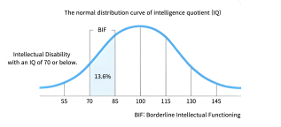

Borderline Intellectual Functioning
Borderline Intellectual Functioning refers to a state where one's IQ falls between 71 and 84.
It affects approximately 14% of the population, with 14 out of 100 individuals living with this condition.
It’s important to note that Borderline Intellectual Functioning is not a disability, although it may sometimes be confused with borderline personality disorder.
A problem can be experienced
Borderline Intellectual Functioning can lead to difficulties in regulating emotions and maintaining interpersonal relationships, which can result in confusion about one’s identity and instability in relationships.
Understanding and recognizing this condition is crucial for mutual understanding and support.
With the help of professionals, appropriate treatment and management are possible.
5 representative actions
- Instability and inconsistency in behavior
- Lack of understanding of others and oneself
- Obsession with immediate rewards
- Rapid fluctuations in emotions
- Difficulty in adhering to rules
How to get over it at home
To overcome, the most important things are ‘patience’ and ‘interest.’
Recognizing and expressing one’s emotions.
- Writing emotional diaries
- Playing emotion recognition games
- Drawing emotions
Building self-directed experiences.
- Providing choices
- Accepting failure
- Ending with positive feedback